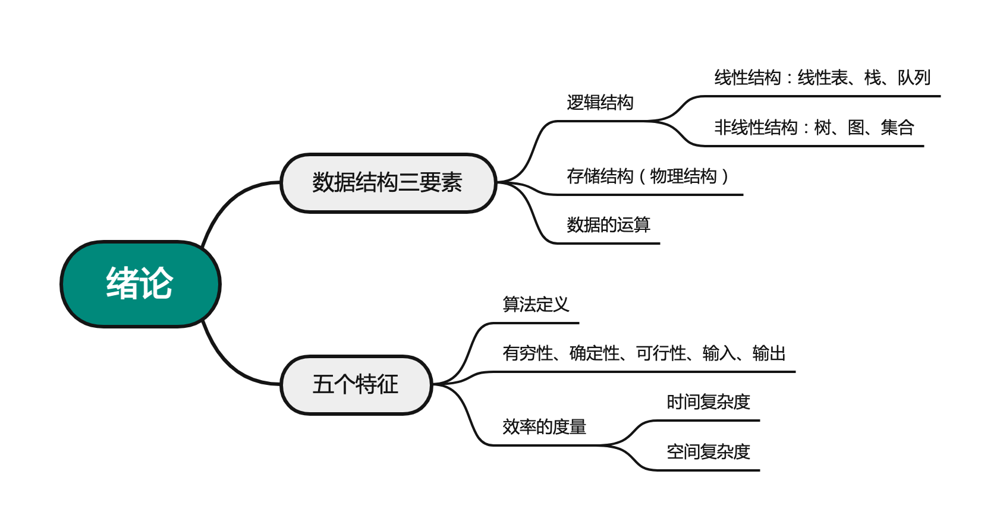

2022.05.23
数据结构的基本概念

数据类型：原子类型（不能再分），结构类型（可以分成若干别的类型），抽象数据类型（抽象数据组织以及相关操作）
数据结构 = 逻辑结构 + 存储结构 + 数据运算
例题：链式存储设计时，结点内的存储单元地址（）。 A. 一定连续 B. 一定不连续 C. 不一定连续 D. 部分连续，部分不连续
答案：A
以下与数据的存储结构无关的术语是（）。 A.循环队列 B. 链表 C.哈希表 D.栈
答案：D